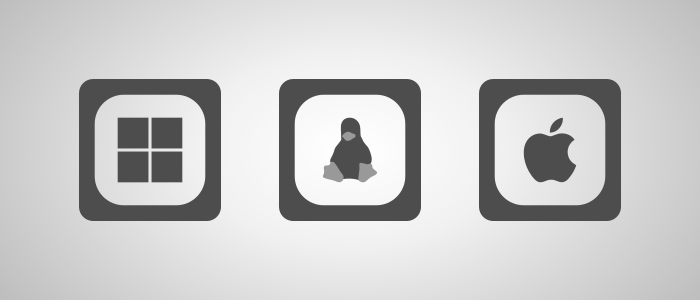

Project packages
Intermediate
Stride separates project files into project packages. This allows for better organization, faster compilation and splitting the game into separate parts (e.g. DLC).
For .NET developers: a Stride project package is a standard C# project.
Platform packages

Every project contains one or more platform packages that represent each platform the game is being developed for. Those packages also contain the entry point of the executable.
Platform packages are automatically created when adding a platform. For more information on how to do this, read the add or remove platform page.
Entry point
The entry point refers to the place in code where execution starts from. Each platform's entry point is stored in their dedicated platform package. For most platforms, it's the NameOfGameApp.cs file.
Every entry point needs to create a game instance and start it.
using Stride.Engine;
using var game = new Game();
game.Run();
Note
The entry point and it's code is automatically generated when a platform is added to the project.